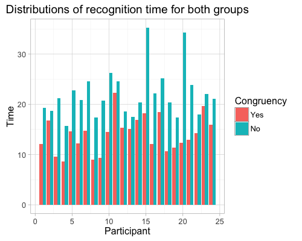

In a Stroop task, participants are presented with a list of words, with each word displayed in a color of ink. The participant’s task is to say out loud the color of the ink in which the word is printed. The task has two conditions: a congruent words condition, and an incongruent words condition. In the congruent words condition, the words being displayed are color words whose names match the colors in which they are printed: for example RED, BLUE. In the incongruent words condition, the words displayed are color words whose names do not match the colors in which they are printed: for example PURPLE, ORANGE. In each case, we measure the time it takes to name the ink colors in equally-sized lists. Each participant will go through and record a time from each condition.
As a general note, be sure to keep a record of any resources that you use or refer to in the creation of your project. You will need to report your sources as part of the project submission.
1. What is our independent variable? What is our dependent variable?
The congruency of the words is the indenpendent variable, and the time it takes to name the ink colors in a given list is the dependent variable.
2. What is an appropriate set of hypotheses for this task? What kind of statistical test do you expect to perform? Justify your choices.
Null hypothesis: The population mean of naming time is the same for both congruent and incongruent lists of words.
Alternative hypothesis: The population mean of naming time for incongruent words is different from that for the congruent words.
H0: μcongruent = μincongruent
HA: μcongruent ≠ μincongruent
(Although we don't know if the potential effect is positive (faster recognition) or negative (slower recognition), a reasonable guess is that the effect is negative. Therefore another alternative hypothesis could be: the congruency has a negative effect on the time it takes to name the ink colors of the words.)
I will perform a paired t-test (independent t-test) on the two lists of time, for the following reasons:
1) The sample size is 24, which is less than 30, and the population variance is also unknown, therefore a Z test is not appropriate.
2) Each participant performs the reading on two different lists of words, making the measured time dependent pairs.
Now it’s your chance to try out the Stroop task for yourself. Go to this link, which has a Java-based applet for performing the Stroop task. Record the times that you received on the task (you do not need to submit your times to the site.) Now, download this dataset which contains results from a number of participants in the task. Each row of the dataset contains the performance for one participant, with the first number their results on the congruent task and the second number their performance on the incongruent task.
3. Report some descriptive statistics regarding this dataset. Include at least one measure of central tendency and at least one measure of variability.
Median values for congruent and incongruent groups are 14.36 and 21.02 respectively; their standard deviations are 3.559 and 4.797 respectively.
4. Provide one or two visualizations that show the distribution of the sample data. Write one or two sentences noting what you observe about the plot or plots.
For every single participant, the time it takes for the incongruent words is longer than the time taken for the congruent words. (Following the review of my first submission, I changed the line plot to the bar plot because of the discreteness of the data. Thanks!)
5. Now, perform the statistical test and report your results. What is your confidence level and your critical statistic value? Do you reject the null hypothesis or fail to reject it? Come to a conclusion in terms of the experiment task. Did the results match up with your expectations?
With paired t-test with two-sided alternative hypothesis, the 95% confidence interval is (-10.019028, -5.910555), the statistic value is -8.0207. With p-value equal to 4.103e-08, I rejected the null hypothesis, i.e. there is significent difference between the reading time for the two different groups.
6. Optional: What do you think is responsible for the effects observed? Can you think of an alternative or similar task that would result in a similar effect? Some research about the problem will be helpful for thinking about these two questions!
I think it could be because the word meaning registers faster than the color does. Along the similar line, words written in different fonts and also are the names of fonts could introduce similar effect.
Websites visited for help:
Insert image into html file
Wikipedia page about Stroop effect